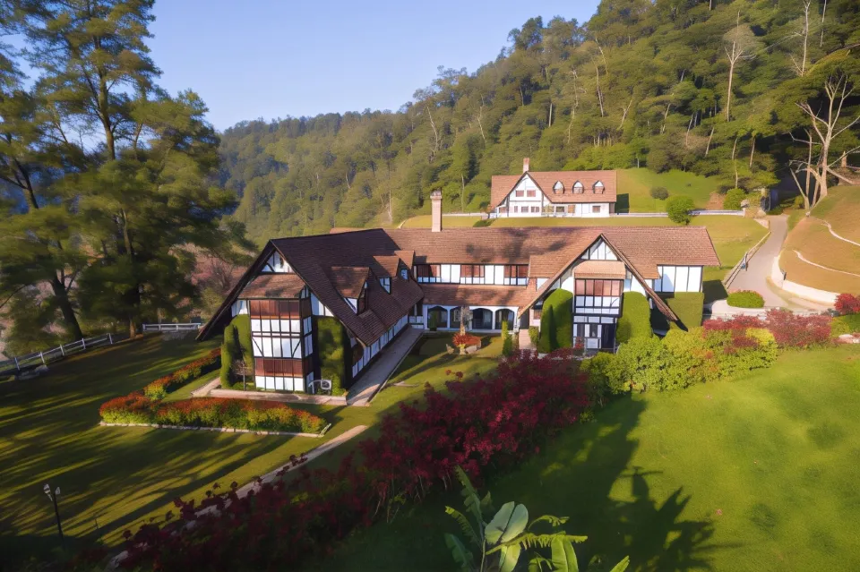

金馬崙高原

海拔1820公尺的金馬崙高原，可以從霹靂州的打巴啟程前往。這座高原是由一位測量員WILLIAM CAMERON，於1885年所發現。
他形容此處是“一座擁有漂亮山坡的完美高原，受崇高壯觀的大山所圍繞”。這座高原受一層層的山脈及山谷所覆蓋，風景如詩如畫，美不勝收。
剛開始這裡吸引了茶葉及林地種植者，因為他們需要比較寒冷的氣候種植作物。接著，許多華裔菜農跟著看上這塊地方，最後一項一項的經濟發展源源不絕而來。
玫瑰山莊
營業時間： 8:30-18:30
門票價格： 5 MYR （匯率：1馬幣==7.5臺幣）
推薦停留時間： 1-2 小時
金馬倫高原上著名的玫瑰山莊，不可錯過的遊覽景點。位於納基農場菜市場街尾，規模不小，從遠處看就是建在山丘上的，山頂上有“玫瑰山莊”的字型。
擁有接近450個品種的各式玫瑰，形成了金馬倫高原上獨特靚麗的風景。除去繽紛靚麗的玫瑰，還可以看到其他獨特的花，例如山茶花、非洲菊、百合、金銀花、吉普賽花等等。涼爽的高原氣候更為人們提供了親近自然，呼吸新鮮空氣，盡情放鬆身心的機會。
BOH茶莊
營業時間： 周二-周日9:00-16:30，周一休息（學校假期和公共假期除外）。
門票價格： 免費
推薦停留時間： 3.0-4.0 小時
金馬倫高原是當地及其有名的古老茶山，而BOH茶園則是高原最知名的茶園。走進茶園，鬱郁蔥蔥，壯觀整齊鋪開的茶樹覆蓋，猶如世外桃源。
此外，茶園設有茶葉種植園、茶廠、展覽館及茶館，您可以在這裡觀看茶葉的生產全過程及馬來西亞茶文化的曆史等。茶園入門免費，逛累了可以在茶園的茶座裡一嘗各種格式花茶，水果茶，享受美味小吃及觀賞大自然風光。或者購買茶葉及紀念品作為手信。


遊覽BOH茶園後，我們建議您可入住附近的金馬侖湖高地湖畔小屋度假村。
金馬侖湖高地湖畔小屋度假村
金馬侖湖高地湖畔小屋度假村為忙碌一天的旅客提供一個放鬆身心的好地方。 金馬侖湖高地湖畔小屋度假村是您遍覽冷力美景與親近大自然之聲的理想選擇。
怡保機場是最近的主要交通運輸，距離約96km。 對於喜歡飛行的人而言，怡保機場是最近的選擇，約96km遠。 這家酒店靠近冷力的熱門景點，包括Highlands Apiary Farm，Cameron Highlands Trail No. 5 and 7和Church of Our Lady of Mount Carmel。
經過漫長的一天的觀光後，這家酒店是您放鬆身心的好地方。 為方便客人，酒店可安排機場接機服務。 這間冷力酒店在網站上提供了停車場。

如您正搜尋遊覽區內其他景點後的住處，金馬侖捷尼酒店是您的不二之選。
金馬侖捷尼酒店
在2021開業，金馬侖捷尼酒店在金馬侖高原是一個很好的住宿選擇。
在交通方面，距離怡保機場約85km。 怡保機場位於85km附近，往返機場方便。 Thompson Falls，Mah Meri Art Gallery和Kelab Golf Sultan Ahmad Shah都在短距離內，在此區域可以參與多元的活動。
在忙碌的一天結束時，旅客可在酒店放鬆身心或外出享受城市。 這間金馬侖高原酒店在網站上提供了停車場。
交通資訊
目前，馬來西亞的鐵路網絡相對發達，以下是一些搭乘火車到達不同城市和地區的主要路線：
1. 吉隆坡 - 彭亨州：
⤷ 吉隆坡 Sentral 到 Kuantan（彭亨州首府）的火車服務。
2. 吉隆坡 - 檳城：
⤷ 有直達火車服務連接吉隆坡 Sentral 和檳城。
3. 吉隆坡 - 金馬倫（Cameron Highlands）：
⤷ 您可以搭乘火車到達 Tapah Road 火車站，然後轉乘巴士或計程車前往金馬倫。
4. 吉隆坡 - 亞羅士打：
⤷ 有火車服務連接吉隆坡 Sentral 和亞羅士打。
5. 吉隆坡 - 巴生谷（Klang Valley）區域：
⤷ 廣泛的通勤和城際列車服務連接吉隆坡及其周邊地區，如雙溪毛糯、莎阿南、吉隆坡國際機場等。
6. 彭亨州 - 關丹：
⤷ 彭亨州內的火車服務，例如從 Kuantan 到關丹。
7. 彭亨州 - 金馬倫：
⤷ 可以搭乘火車到達 Tapah Road 火車站，然後轉乘巴士或計程車前往金馬倫。
請注意，馬來西亞的火車服務可能有變動，建議您在計劃旅行前查詢馬來西亞鐵路公司（KTMB）的最新時間表和路線信息，以確保準確性和實用性。
外國旅客抵達吉隆坡國際機場後(KLIA1或2)，可到地下一樓搭乘機場巴士或機場快線(KLIA Ekspres)直達吉隆坡總站(KL Sentral)。
然後轉乘巴士(T410)到吉隆坡南湖镇交通综合站 (Terminal Bersepadu Selatan – TBS) ，再搭乘前往金馬倫高原的巴士。
吉隆坡南湖镇交通综合站(TBS)到金馬倫高原Tanah Rata巴士總站路程大約需3小時，中途會停靠休息站讓遊客休息。
可直接購買KLOOK金馬倫單程巴士票，只需出示電子憑證即可上車，發車時間為早上9am和下午2pm兩個時段，只需RM37.5。
KLOOK城市包車接送 金馬崙高原 – 吉隆坡
KLOOK城市交通 吉隆坡至周邊城市（吉隆坡、馬六甲、檳城、雲頂高原等地）
馬來西亞的大部分街道上，都不乏計程車，除了接載禁區，您可在街上輕易呼截計程車。
馬來西亞的計程車均裝有里程表和空調，車廂清潔，車資相比網約車貴一些。